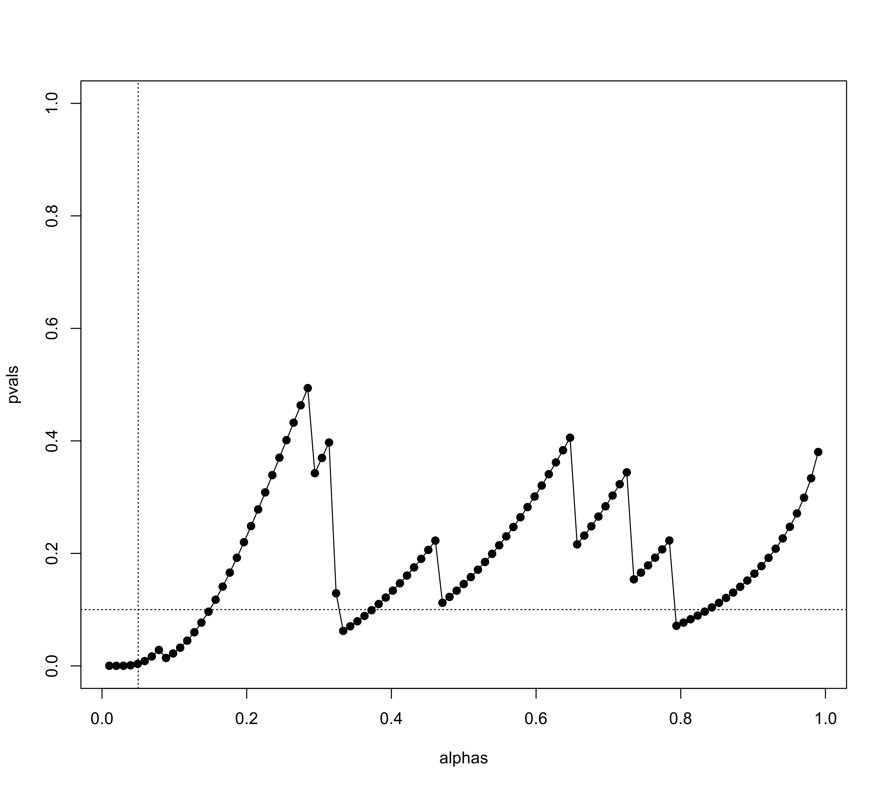

tes.RdFunction to conduct the test of excess significance.
tes(x, vi, sei, subset, data, H0=0, alternative="two.sided", alpha=.05, theta, tau2,
test, tes.alternative="greater", progbar=TRUE, tes.alpha=.10, digits, ...)
# S3 method for tes
print(x, digits=x$digits, ...)These arguments pertain to data input:
a vector with the observed effect sizes or outcomes or an object of class "rma".
vector with the corresponding sampling variances (ignored if x is an object of class "rma").
vector with the corresponding standard errors (note: only one of the two, vi or sei, needs to be specified).
optional (logical or numeric) vector to specify the subset of studies that should be included (ignored if x is an object of class "rma").
optional data frame containing the variables given to the arguments above.
These arguments pertain to the tests of the observed effect sizes or outcomes:
numeric value to specify the value of the effect size or outcome under the null hypothesis (the default is 0).
character string to specify the sidedness of the hypothesis when testing the observed effect sizes or outcomes. Possible options are "two.sided" (the default), "greater", or "less". Can be abbreviated.
alpha level for testing the observed effect sizes or outcomes (the default is .05).
These arguments pertain to the power of the tests:
optional numeric value to specify the value of the true effect size or outcome under the alternative hypothesis. If unspecified, it will be estimated based on the data or the value is taken from the "rma" object.
optional numeric value to specify the amount of heterogeneity in the true effect sizes or outcomes. If unspecified, the true effect sizes or outcomes are assumed to be homogeneous or the value is taken from the "rma" object.
These arguments pertain to the test of excess significance:
optional character string to specify the type of test to use for conducting the test of excess significance. Possible options are "chi2", "binom", or "exact". Can be abbreviated. If unspecified, the function chooses the type of test based on the data.
character string to specify the sidedness of the hypothesis for the test of excess significance. Possible options are "greater" (the default), "two.sided", or "less". Can be abbreviated.
logical to specify whether a progress bar should be shown (the default is TRUE). Only relevant when conducting an exact test.
alpha level for the test of excess significance (the default is .10). Only relevant for finding the ‘limit estimate’.
Miscellaneous arguments:
optional integer to specify the number of decimal places to which the printed results should be rounded.
other arguments.
The function carries out the test of excess significance described by Ioannidis and Trikalinos (2007). The test can be used to examine whether the observed number of significant findings is greater than the number of significant findings expected given the power of the tests. An overabundance of significant tests may suggest that the collection of studies is not representative of all studies conducted on a particular topic.
One can either pass a vector with the observed effect sizes or outcomes (via x) and the corresponding sampling variances via vi (or the standard errors via sei) to the function or an object of class "rma".
The observed effect sizes or outcomes are tested for significance based on a standard Wald-type test, that is, by comparing \[z_i = \frac{y_i - \mbox{H}_0}{\sqrt{v_i}}\] against the appropriate critical value(s) of a standard normal distribution (e.g., \(\pm 1.96\) for alternative="two.sided" and alpha=.05, which are the defaults). Let \(O\) denote the observed number of significant tests.
Given a particular value for the true effect or outcome denoted by \(\theta\) (which, if it is unspecified, is determined by computing the inverse-variance weighted average of the observed effect sizes or outcomes or the value is taken from the model object), let \(1-\beta_i\) denote the power of the \(i\textrm{th}\) test (where \(\beta_i\) denotes the Type II error probability). If \(\tau^2 > 0\), let \(1-\beta_i\) denote the expected power (computed based on integrating the power over a normal distribution with mean \(\theta\) and variance \(\tau^2\)). Let \(E = \sum_{i=1}^k (1-\beta_i)\) denote the expected number of significant tests.
The test of excess significance then tests if \(O\) is significantly greater (if tes.alternative="greater") than \(E\). This can be done using Pearson's chi-squared test (if test="chi2"), a binomial test (if test="binomial"), or an exact test (if test="exact"). The latter is described in Francis (2013). If argument test is unspecified, the default is to do an exact test if the number of elements in the sum that needs to be computed is less than or equal to 10^6 and to do a chi-square test otherwise.
One can also iteratively find the value of \(\theta\) such that the p-value of the test of excess significance is equal to tes.alpha (which is .10 by default). The resulting value is called the ‘limit estimate’ and is denoted \(\theta_{lim}\) by Ioannidis and Trikalinos (2007). Note that the limit estimate is not computable if the p-value is larger than tes.alpha even if \(\theta = \mbox{H}_0\).
An object of class "tes". The object is a list containing the following components:
the number of studies included in the analysis.
the observed number of significant tests.
the expected number of significant tests.
the ratio of O over E.
the type of test conducted.
the p-value of the test of excess significance.
the (estimated) power of the tests.
logical vector indicating which tests were significant.
the value of \(\theta\) used for computing the power of the tests.
the ‘limit estimate’ (i.e., \(\theta_{lim}\)).
some additional elements/values.
The results are formatted and printed with the print function.
When tes.alternative="greater" (the default), then the function tests if \(O\) is significantly greater than \(E\) and hence this is indeed a test of excess significance. When tes.alternative="two.sided", then the function tests if \(O\) differs significantly from \(E\) in either direction and hence it would be more apt to describe this as a test of (in)consistency (between \(O\) and \(E\)). Finally, one can also set tes.alternative="less", in which case the function tests if \(O\) is significantly lower than \(E\), which could be considered a test of excess non-significance.
When tes.alternative="two.sided", one can actually compute two limit estimates. The function attempts to compute both.
The function computes the significance and power of the studies based on Wald-type tests regardless of the effect size or outcome measure used as input. This works as an adequate approximation as long as the within-study sample sizes are not too small.
Note that the test is not a test for publication bias but a test whether the set of studies includes an unusual number of significant findings given the power of the studies. The general usefulness of the test and its usefulness under particular circumstances (e.g., when there is substantial heterogeneity in the true effect sizes or outcomes) has been the subject of considerable debate. See Francis (2013) and the commentaries on this article in the same issue of the journal.
Francis, G. (2013). Replication, statistical consistency, and publication bias. Journal of Mathematical Psychology, 57(5), 153–169. https://doi.org/10.1016/j.jmp.2013.02.003
Ioannidis, J. P. A., & Trikalinos, T. A. (2007). An exploratory test for an excess of significant findings. Clinical Trials, 4(3), 245–253. https://doi.org/10.1177/1740774507079441
Viechtbauer, W. (2010). Conducting meta-analyses in R with the metafor package. Journal of Statistical Software, 36(3), 1–48. https://doi.org/10.18637/jss.v036.i03
### calculate log risk ratios and corresponding sampling variances
dat <- escalc(measure="RR", ai=x.a, n1i=n.a, ci=x.p, n2i=n.p, data=dat.dorn2007)
### conduct test of excess significance (using test="chi2" to speed things up)
tes(yi, vi, data=dat, test="chi2")
#>
#> Test of Excess Significance
#>
#> Observed Number of Significant Findings: 10 (out of 19)
#> Expected Number of Significant Findings: 4.9233
#> Observed Number / Expected Number: 2.0311
#>
#> Estimated Power of Tests (based on theta = 0.3123)
#>
#> min q1 median q3 max
#> 0.0894 0.1270 0.2118 0.3537 0.5397
#>
#> Test of Excess Significance: p = 0.0039 (X^2 = 7.0656, df = 1)
#> Limit Estimate (theta_lim): 0.4062 (where p = 0.1)
#>
### same as fitting an EE model and then passing the object to the function
res <- rma(yi, vi, data=dat, method="EE")
tes(res, test="chi2")
#>
#> Test of Excess Significance
#>
#> Observed Number of Significant Findings: 10 (out of 19)
#> Expected Number of Significant Findings: 4.9233
#> Observed Number / Expected Number: 2.0311
#>
#> Estimated Power of Tests (based on theta = 0.3123)
#>
#> min q1 median q3 max
#> 0.0894 0.1270 0.2118 0.3537 0.5397
#>
#> Test of Excess Significance: p = 0.0039 (X^2 = 7.0656, df = 1)
#> Limit Estimate (theta_lim): 0.4062 (where p = 0.1)
#>
### illustrate limit estimate (value of theta where p-value of test is equal to tes.alpha)
thetas <- seq(0,1,length=101)
pvals <- sapply(thetas, function(theta) tes(yi, vi, data=dat, test="chi2", theta=theta)$pval)
plot(thetas, pvals, type="o", pch=19, ylim=c(0,1))
sav <- tes(yi, vi, data=dat, test="chi2")
abline(h=sav$tes.alpha, lty="dotted")
abline(v=sav$theta.lim, lty="dotted")
### examine significance of test as a function of alpha (to examine 'significance chasing')
alphas <- seq(.01,.99,length=101)
pvals <- sapply(alphas, function(alpha) tes(yi, vi, data=dat, test="chi2", alpha=alpha)$pval)
plot(alphas, pvals, type="o", pch=19, ylim=c(0,1))
abline(v=.05, lty="dotted")
abline(h=.10, lty="dotted")
